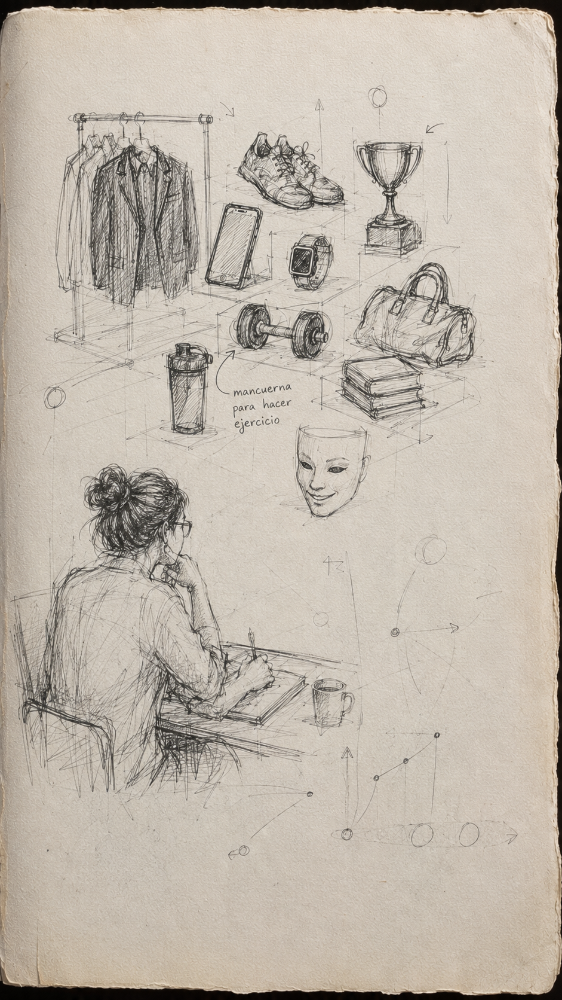

Comprender que el agotamiento no es un fallo personal, sino la respuesta lógica a un modelo de éxito en crisis. Y trazar caminos alternos hacia la expansión y la resonancia.
El éxito se ha converito en una deuda permanente y no en el resultado concreto de una misión ¿Cómo podemos pensarlo de otra manera a través de las humanidades, las ciencias sociales y la biología?
Formatos.
Cómo fracturar y repensar el discurso del éxito.
Suscribirse al archivo →Pensar las crisis y reelaboraciones del éxito. disponible en formato de audio para ser escuchado en movimiento o en pausa.
Unirse a la lista de espera →Un espacio analógico para pausar, diagnosticar el agotamiento contemporáneo y construir alternativas colectivas de resonancia y expansión.
Solicitar dossier pedagógico y cotización
Periodista, ensayista, investigadora y creadora. Doctora en Estudios Interdisciplinarios sobre Pensamiento, Cultura y Sociedad.
He trabajado en medios de comunicación, organizaciones sociales y universidades en Colombia, España y Chile. Estudia el éxito como hiperobjeto y el impacto que tiene en nuestras sociedades la forma en la que lo concebimos. Taquicardia es su apuesta por pasar de la academia a la autoría pública, con rigor, pero también con divulgación y sensibilidad.